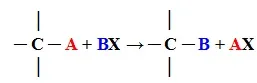
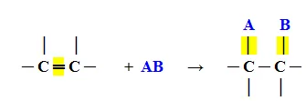
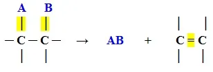

1 REAÇÕES QUÍMICAS
1.1 REAÇÕES INORGÂNICAS
Habitualmente, as reações inorgânicas são categorizadas em função do número de substâncias produzidas, número de reagentes envolvidos e da presença de substâncias simples ou compostas. Existem quatro tipos principais de reações inorgânicas (FOGAÇA, 2023a).
1.1.1 Reações de síntese ou adição
As reações inorgânicas de síntese ou adição são aquelas em que duas ou mais substâncias reagem para formar um produto mais complexo. Um exemplo é a reação entre o gás hidrogênio e o gás nitrogênio, que produz o composto químico amônia (NH3). A equação química correspondente é 3 H2 + 1 N2 → 2 NH3 (FOGAÇA, 2023a).
1.1.2 Reação de decomposição ou análise
As reações de análise ou decomposição envolvem um único reagente que é convertido em dois ou mais produtos. Um exemplo é a reação que ocorre nos airbags dos carros, onde a azida de sódio se decompõe em gás nitrogênio e sódio metálico através do aumento de temperatura. A equação química é 2 NaN3(s) → 3 N2(g) + 2 Na(s) (FOGAÇA, 2023a).
1.1.3 Reação de simples troca
As reações de simples troca ou deslocamento são caracterizadas pela interação entre uma substância composta e uma substância simples. Essa interação resulta em uma nova substância composta e uma nova substância simples (BATISTA, 2023).
1.1.4 Reação de dupla troca
As reações de dupla troca ocorrem quando substâncias compostas, contendo mais de um tipo de elemento químico, interagem entre si, promovendo uma troca de espécies químicas. Essa interação resulta na formação de novas substâncias compostas (BATISTA, 2023).
1.2 REAÇÕES ORGÂNICAS
As reações orgânicas são essenciais na produção de compostos usados em diversos setores. Elas podem ser categorizadas em três tipos principais, sendo elas: reações de adição, reações de eliminação e reações de substituição (FOGAÇA, 2023b).
1.2.1 Reações de substituição
As reações de substituição ocorrem quando um átomo ou grupo de átomos de um composto orgânico é substituído por outro. Tais reações são comuns em alcanos, hidrocarbonetos aromáticos e haletos orgânicos (FOGAÇA, 2023b).
Figura 1 - Exemplo de uma reação de substituição
Manual da Química, 2023
1.2.2 Reações de adição
As reações de adição ocorrem em compostos insaturados, onde uma ligação pi (π) é quebrada e outros átomos são adicionados à molécula, formando uma nova ligação simples (FOGAÇA, 2023b).
Figura 2 - Exemplo de uma reação de adição
Manual da Química, 2023
1.2.3 Reação de eliminação
A partir de um composto orgânico, ocorre uma reação de decomposição que resulta em dois produtos, sendo um orgânico e outro inorgânico (FOGAÇA, 2023b).
Figura 3 - Exemplo de reação de eliminação
Manual da Química, 2023
REFERÊNCIAS
BATISTA, Carolina. Reações Químicas. Toda Matéria, [s.d.]. Disponível em: https://www.todamateria.com.br/reacoes-quimicas/ Acesso em: 3 abr. 2023.
FOGAÇA, Jennifer. Reações Inorgânicas. Manual da química. Disponível em: https://www.manualdaquimica.com/quimica-inorganica/tipos-reacoes-inorganicas.htm.Acesso em: 5 abr. 2023a.
FOGAÇA, Jennifer. Reações Inorgânicas. Manual da química. Disponível em: https://www.manualdaquimica.com/quimica-inorganica/tipos-reacoes-inorganicas.htm.Acesso em: 5 abr. 2023b.